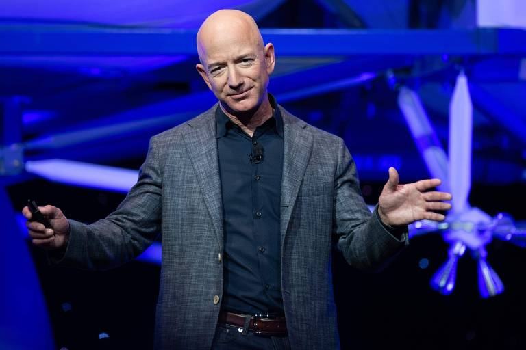
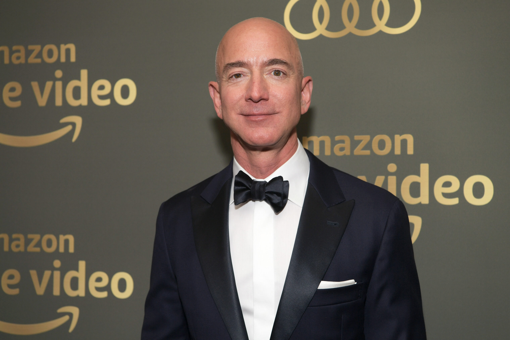

História de vida
Jeffrey Preston Bezos, conhecido como Jeff Bezos, nasceu em 12 de janeiro de 1964, em Albuquerque, Novo México, nos Estados Unidos. Ele é um empresário e investidor de destaque, amplamente conhecido por ser o fundador da Amazon.com, uma das maiores empresas de comércio eletrônico do mundo.
Bezos cresceu em Houston, Texas, e desde jovem demonstrou grande interesse por ciência e tecnologia. Ele frequentou a Escola Palmetto, na Flórida, onde se destacou em matemática e ciências. Posteriormente, ingressou na Universidade de Princeton, onde se formou em Ciência da Computação e Engenharia Elétrica.
Após concluir seus estudos, Bezos trabalhou em várias empresas financeiras e de tecnologia, incluindo a empresa de investimentos D.E. Shaw & Co. Foi durante seu tempo na D.E. Shaw que ele identificou o potencial do comércio eletrônico e decidiu empreender nesse setor.
Em 1994, Jeff Bezos fundou a Amazon.com, inicialmente como uma livraria online. A empresa rapidamente expandiu seu escopo e começou a vender uma ampla variedade de produtos, desde eletrônicos e roupas até móveis e alimentos. A visão de longo prazo de Bezos e seu foco implacável no atendimento ao cliente foram fundamentais para o crescimento e sucesso da Amazon.
A empresa enfrentou desafios iniciais, mas Bezos manteve sua visão de construir uma empresa centrada no cliente, mesmo em detrimento de lucros imediatos. A estratégia de investir em infraestrutura, logística e serviços inovadores, como o Amazon Prime, permitiu que a empresa se tornasse líder global no comércio eletrônico.
Ao longo dos anos, Bezos também diversificou os negócios da Amazon, expandindo para áreas como computação em nuvem (Amazon Web Services), produção de dispositivos eletrônicos (Kindle, Echo) e entretenimento (Amazon Studios). A empresa se tornou uma das mais valiosas do mundo e Jeff Bezos se tornou um dos homens mais ricos do planeta.
Em fevereiro de 2021, Bezos anunciou que deixaria o cargo de CEO da Amazon, mas permaneceria como presidente do conselho. Ele expressou seu desejo de se dedicar a outros empreendimentos, como o Blue Origin, sua empresa de exploração espacial, e a filantropia.
Além de suas realizações no mundo dos negócios, Jeff Bezos é conhecido por seu estilo de liderança visionário e sua busca pela inovação. Sua abordagem empreendedora e sua capacidade de pensar a longo prazo o tornaram uma figura influente e inspiradora no mundo dos negócios.